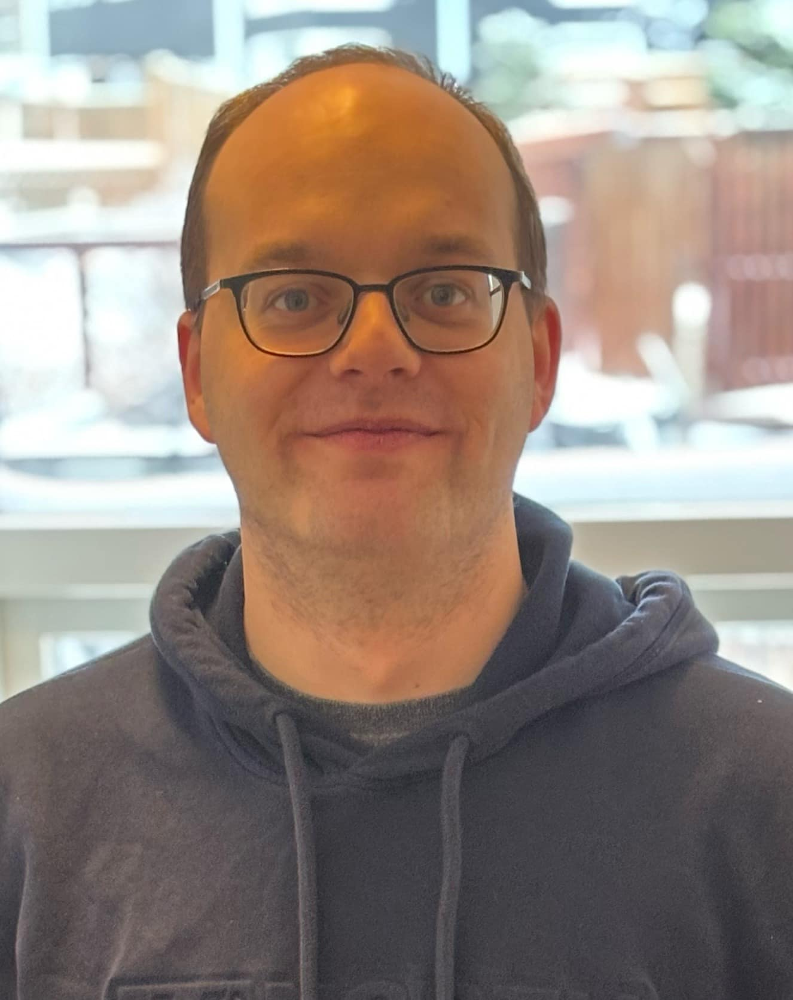
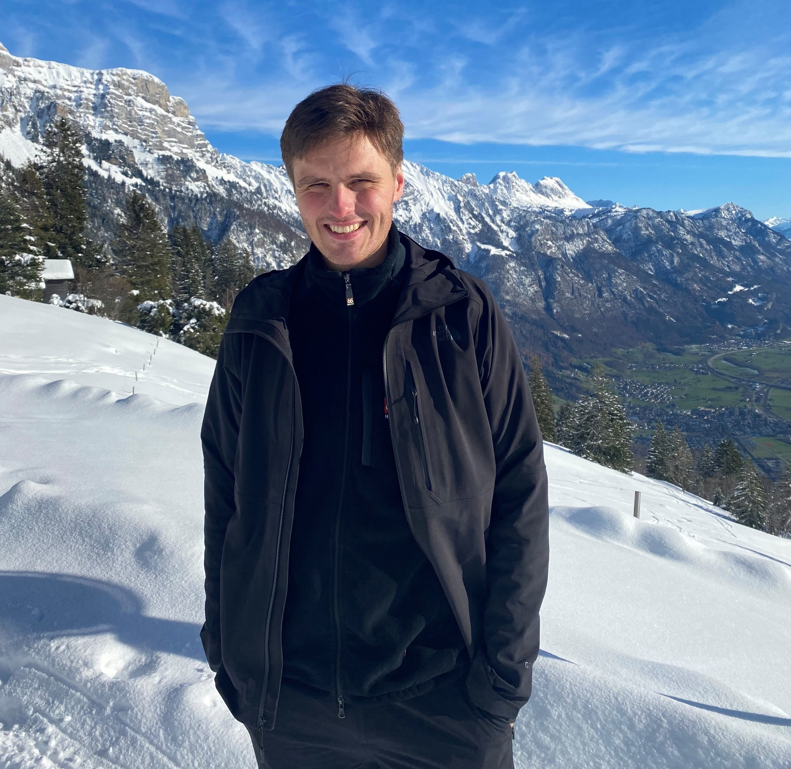

Tilgangur sjóðsins er að efla kennslu og auka áhuga nemenda á tölvunarfræðum við Menntaskólann í Reykjavík. Sjóðurinn úthlutar bókarverðlaunum við útskrift til þess nemanda við MR sem þykir hafa skarað fram úr í tölvunarfræðum.
Nánar um sjóðinnMinningarsjóður Sigþórs Bessa Bjarnasonar, stærðfræðings, var stofnaður árið 2013. Sigþór Bessi var afburðarnemandi í stærðfræði og tölvunarfræði, fyrst við Menntaskólann í Reykjavík, síðan við Háskóla Íslands og loks við Edinborgarháskóla þar sem hann hóf doktorsnám í tölvunarfræði. Hann lést langt fyrir aldur fram árið 2011 eftir baráttu við krabbamein. Vinir, fjölskylda og ættingjar Bessa stofnuðu sjóðinn til að efla áhuga nemenda MR á tölvunarfræðum, og hefur sjóðurinn úthlutað bókaverðlaunum við útskrift til þess nemanda sem þykir hafa skarað fram úr í því fagi.
Sigþór Bessi Bjarnason, fæddist í Reykjavík 9. september 1985. Hann lést á líknardeild Landspítalans í Kópavogi 6. júlí 2011. Foreldrar hans eru Guðrún Erna Baldvinsdóttir læknir, f. 25. mars 1958 í Reykjavík og Bjarni Bessason prófessor, f. 24. júlí 1957 í Hafnarfirði. Systkini hans eru Magnús Snorri, f. 29. júní 1990 og Sólveig, f. 8. maí 1995. Unnusta hans var Erna Jóna Guðmundsdóttir, f. 28. júlí 1990.
Bessi flutti til Noregs með fjölskyldu sinni þegar hann var tveggja ára gamall og bjó þar næstu árin. Árið 1995 þegar hann var tíu ára snéri fjölskyldan til baka til Íslands og settist að í Árbæjarhverfi. Hann lauk grunnskólaprófi frá Árbæjarskóla 2001, stúdentsprófi frá Menntaskólanum í Reykjavík (MR) 2005 og BS-prófi í stærðfræði frá Háskóla Íslands 2008 með ágætiseinkunn. Bessi hafði frá fyrstu tíð mikinn áhuga á stærðfræði, forritun og tölvum og hlaut ýmsar viðurkenningar fyrir árangur á þessum sviðum. Hann var í þriggja manna liði MR sem vann forritunarkeppni framhaldsskólanna á efra stigi árið 2004. Hann tók einnig þátt í Ólympíuleikunum í stærðfræði fyrir Íslands hönd í Aþenu árið 2004. Eftir stúdentspróf vann Bessi á sumrin við forritun hjá ýmsum fyrirtækjum. Fyrst hjá Öðru veldi (2005), svo Midi.is (2006), Kaupþingi (2007) og Íslenskri Erfðagreiningu (2008). Árið 2008 hlaut Bessi styrk til þriggja ára frá Microsoft Research Europe til doktorsnáms í tölvunarfræði við Edinborgarháskóla. Hann flutti til Skotlands og hóf námið haustið 2008. Eftir ársdvöl úti varð hann að hætta vegna veikinda en vann eftir það hjá hugbúnaðarfyrirtækinu Gogogic í Reykjavík eins og heilsa hans og þrek leyfði.
Á sínum yngri árum var Bessi í Gradualekór Langholtskirkju og lærði einnig á klarínett í Tónlistarskóla Reykjavíkur. Hann var mikið í útivist og stundaði hestamennsku af kappi og átti hestinn Baldur sem hann fékk í fermingargjöf. Hann hafði gaman af fjallgöngum og fór víða um landið. Bessi hafði sterkar rætur til Noregs og átti þar góðan vin, Halvor. Þeir æfðu saman gönguskíði og ferðuðust mikið með fjölskyldum sínum á sumrin. Menntaskólaárin voru góð og þar eignaðist Bessi sína bestu vini sem áttu frumkvæði að því að stofna þennan minningarsjóð. Bessa þótti alltaf vænt um MR og því er vel við hæfi að þar sé nú minningarsjóður í hans nafni.
Sjóðurinn tilkynnir með stolti að eftirfarandi nemendur hafa hlotið bókaverðlaun frá sjóðnum við útskrift frá MR
Arnór Valdimarsson lauk stúdentsprófi frá Menntaskólanum í Reykjavík 2013 og BS-prófi í tölvunarfræði frá Háskóla Íslands 2016 með ágætiseinkunn. Meðfram námi í tölvunarfræði vann Arnór hjá Já sem forritari (2015 - 2019) áður en hann flutti til Svíþjóðar árið 2019 og byrjaði að vinna hjá Spotify. Árið 2022 flutti hann aftur til Íslands og hélt áfram að vinna hjá Spotify.
Hjalti Þór Ísleifsson fæddist 12. júlí 1996. Hjalti Þór lauk stúdentsprófi frá Menntaskólanum í Reykjavík af eðlisfræðibraut 2016. Sumarið eftir stúdentspróf og næstu þrjú sumur þar á eftir, ásamt einum vetri, starfaði Hjalti hjá Wuxi NextCode við forritun. Hjalti Þór brautskráðist með BS próf í stærðfræði frá Háskóla Íslands 2019. Haustið 2019 hóf Hjalti Þór nám í stærðfræði við ETH háskólann í Zürich í Sviss. Hjalti kenndi dæmatíma og var með stundakennslu í stærðfræði við Háskóla Íslands, meðfram námi þar og veturinn 2020/2021, þegar hann var að mestu heima vegna Covid-faraldursins. Hjalti starfaði hjá Íslenskri erfðagreiningu sumarið 2020 við forritun. Hjalti Þór brautskráðist með MS próf vorið 2021. Hann hóf doktorsnám sitt í hreinni stærðfræði við sama skóla haustið 2021 og hugðist ljúka því námi í júní 2024. Hjalti Þór var búinn að fá tvær greinar birtar eftir sig í doktorsnáminu, sú fyrri var birt strax á fyrsta ári hans í doktorsnáminu, í febrúar 2022, en sú seinni í sömu viku og hann lést. Hjalti Þór lést á heimili sínu í Sviss 15. desember 2023.
Kennitala: 481013-0540
Reikningsnr.: 0370-13-013853
Ef þú ert með hugmyndir um hvernig sjóðurinn getur víkkað út starfsemi sína, eða hefur einhverjar spurningar um sjóðinn, ekki hika við að hafa samband!